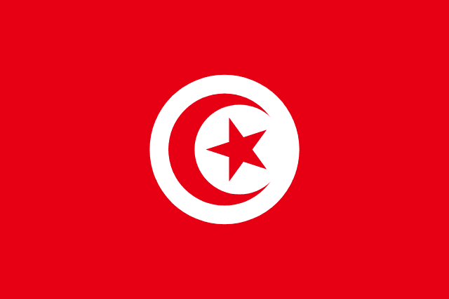

Información General
Director Técnico: Kais Yaâkoubi
Capitán: Ellyes Skhiri
📖 Historia Mundialista
Túnez es una de las selecciones africanas con mayor presencia en Copas del Mundo. Es una potencia del norte de África con tradición defensiva y gran disciplina táctica.
💡 Curiosidades
Conocida como las "Águilas de Cartago". Fue la primera selección africana en ganar un partido en una Copa del Mundo (1978).
🏆 Participaciones Mundialistas
- 1978 — Argentina
- 1998 — Francia
- 2002 — Corea/Japón
- 2006 — Alemania
- 2018 — Rusia
- 2022 — Qatar
📊 Estadísticas Principales
| Mejor resultado | Fase de grupos |
| Títulos Mundiales | 0 |
| Goleador histórico | Issam Jemâa (36 goles) |
| Más partidos | Radhi Jaïdi (105 partidos) |
⚽ Partidos Mundial 2026
-
vs Suecia
📅 15 de Junio de 2026
🕒 16:00
🏟️ Mercedes-Benz Stadium -
vs Japón
📅 20 de Junio de 2026
🕒 18:00
🏟️ NRG Stadium -
vs Países Bajos
📅 26 de Junio de 2026
🕒 20:00
🏟️ SoFi Stadium
⬅ Volver al Grupo F